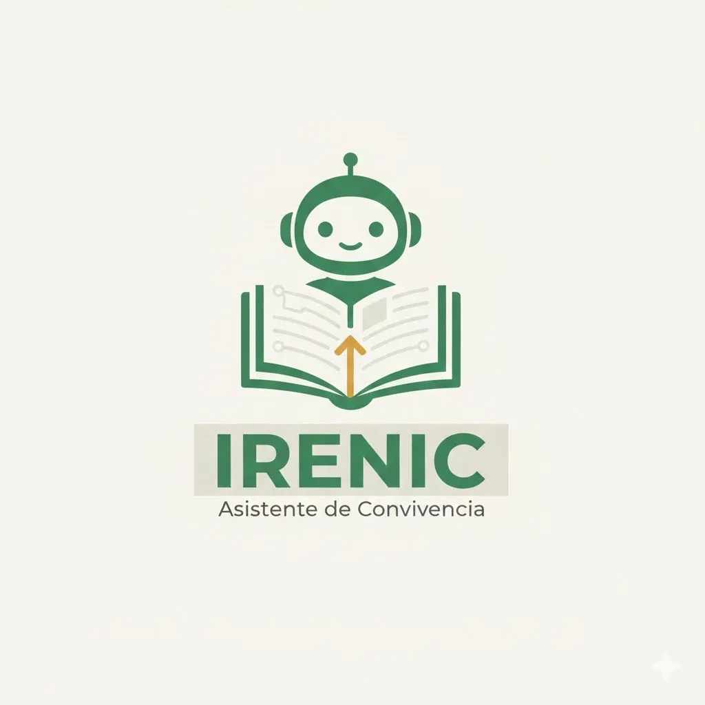

Volver a la Presentación
Volver

IRENIC
COLSAM
Manual de Convivencia • En línea
Nueva Consulta
Reiniciar
Adjuntar documentos
Sugerencias:
Faltas Tipo I, II y III
Normas del Uniforme
Derechos y Debido Proceso
Ruta contra el Acoso
Excusas e Inasistencias
Celulares en el Aula
Iniciando consulta con Irenic...